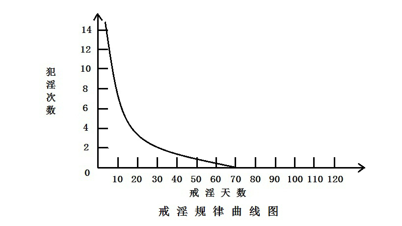

论戒淫的临界点
现在网上谈论戒除自渎恶习（手淫）的文章非常多，介绍的戒淫方法与经验也数不胜数。然而，我发现一个现象，几乎没有一篇文章涉及到戒淫当中一个非常关键而无法回避的问题：到底要戒多少天才能彻底戒掉自渎恶习呢？难道要永无休止的戒下去吗？这实际就是一个关于戒淫临界点的问题。
戒淫的临界点
什么是戒淫临界点？戒淫临界点是戒淫从失败到成功的转折点。一旦达到戒淫临界点，就有彻底戒掉淫习的成功可能。
那么，戒淫的临界点到底是多少天？可以大胆的讲：70天！戒淫能做到70天不犯，就可以做到彻底戒断淫习！换句话说，70天不犯，是戒断自渎恶习的最低底线。
每个人的戒淫临界点是不一样的，70天是一个平均值。有的人戒淫临界点比较短，可能是40--50天或50--60天，有的人临界点较长超过70天。我的戒淫临界点是20天，当我突破20天后就一戒到底取得成功。除去太短和太长两个极端，绝大部分人的戒淫临界点都在70天上下浮动。一般来说，一个人只要能做到70天不犯，就可以做到彻底戒掉恶习。
戒淫临界点是70天的理论依据
一、中国古典哲学著作《易经》认为：第六位最高，天下万事万物逢“七”就是另一个开始（现代自然科学位数方面也认为六是顶点，与《易经》观点不谋而和）。就是说：事物的发展状态到了时间为“七”的时空点时，必然发生状态的变化。《易经》六十四卦的《复》卦卦辞中说“七日来复”，也就是说“七”是事物发展的一个周期。后天的生命，身心的变化也遵循这个自然法则，都是以“七”为周期。用《易经》来占断戒淫的临界点应为：70天。
二、西方现代心理学家经过大量的研究认为：要戒掉一种恶习最少要做到80天不犯，才有彻底断除的可能。
关于戒除一种恶习至少要多少天的问题，西方现代心理学与中国古典哲学《易经》的观点竟然出现了巧合。
戒淫进程的秘密
戒淫是有规律可循的，请看下图：

上图是戒淫规律曲线图。横轴为戒淫天数，竖轴为犯淫次数，戒淫天数与犯淫次数成反比关系。就是说：戒淫天数越短，犯淫次数就越频繁。随着戒淫天数的延长，犯淫次数渐渐开始减少。超过70天后，曲线与横轴相交，犯淫次数为0，表示戒淫者至少要做到70天不犯，才有彻底戒掉淫习取得成功的希望与可能。
根据我个人戒淫的亲身体会及无数戒淫者的经历证明，戒淫其实是有规律可循的。戒淫进程是不均衡的，其内在规律是——“始难终易”。一开始戒淫时会感觉非常困难，随着戒淫时间的不断延长，戒淫会变得越来越容易、轻松，直到最终彻底戒掉恶习。
戒淫的黑暗时期
从戒淫的整体进程来看，戒淫的开始阶段反倒是最难的。具体地讲，戒淫最黑暗、最痛苦、最难熬、最难突破的时期，就是戒淫的前70天。在这段时间内，戒淫屡屡失败，戒淫者的信心受挫，往往会感觉成功无望，如同一个人长期在黑暗中行走，却始终看不到一点光明。由于戒淫最艰难的阶段就集中在前70天，很多人一上来就碰到了难关，由于无法逾越70天，结果就屡戒屡败，这就是为什么很多人感觉戒淫很难的原因。70天，看起来不长，可不经一番寒彻骨，想突破它却并不容易，数以百千计的戒淫者就是在这个时期被淫习击溃的。
戒淫，如果能突破临界点70天，熬过这段最艰难、最黑暗的时期，就会进入柳暗花明的新天地，戒淫效果愈来愈好，就可以做到彻底戒断淫习，成功已经在前方不远处向我们挥手了！
戒淫的小成阶段
戒淫者一旦突破突破临界点70天，闯过了戒淫进程中的黑暗时期，就进入了“戒淫的小成阶段”。戒淫会渐入佳境，感觉戒淫愈来愈轻松，戒淫效果愈来愈好，呈现出另一番新境界。以前屡屡失败的艰辛日子已渐远去。戒淫者此时此刻已能初步将淫习降服住，在戒淫上小有成就，离最后的大成（成功）近在咫尺之遥，几近于成功。
那么，“戒淫的小成阶段”是多少天呢？根据大量戒友的实践经验，我的结论是：70天——360天左右。
进入“戒淫的小成阶段”的人会出现两种情况：一种是顺利通过“小成阶段”，直接迈入“大成阶段”——成功，彻底戒除恶习。另一种是在“小成阶段”又失败了一次或几次，徘徊了一段时间后，才取得最后成功。
刚刚突破“临界点”的人，套用一句禅宗语来形容：“脚跟犹未点地”（尚未站稳）。古代参禅人开悟后，往往要独自入山结庐清修，继续做保任悟境的功夫，否则悟境会退失。对于刚刚突破“戒淫临界点”的人来说亦然。此时的戒淫者，尤须百尺竿头更进一步，继续努力在起心动念处戒淫，“如牧牛人持仗视之，令不犯苗稼”，以保任得来的胜利果实。保任功夫做的好，淫习就彻底戒掉了。
突破“临界点”以后，一旦放松对自己心念的约束，也是会退失复发的。在戒淫实战中确实有个别人在突破临界点后，因为对淫念放松了警惕，导致淫习再次发作，使辛辛苦苦得到的成果毁于一旦，非常可惜。不过，即使突破70天后又复发了，离成功已不远了。任何事第一次做到会很难，一旦做到了，第二次做到就会相对容易。此时戒淫者只需重新振作精神，一鼓作气第二次突破70天，并努力保持戒淫成果，就可以彻底戒断淫习。问题是一次可以成功的事，为何非要二次、甚至三次呢？就我而言，我的淫习史长达二十多年，到了很严重的地步，当我第一次突破70天后就彻底成功了，根本没用第二次。不少戒淫者也都是一次性成功的。
突破临界点70天之前，戒掉淫习只是一个美好的愿景，突破临界点70天进入“戒淫的小成阶段”后，愿景将会变为现实！“戒淫的小成阶段”与“戒淫的大成阶段”（成功）距离很近，仅一步之遥。进入“戒淫的小成阶段”的人，可以说是一只脚已经迈入成功的门槛，但也仅仅是一只脚。“戒淫的小成阶段”是戒淫过程中的关键时期，进一步是成功，退一步是失败，非常能考验一个人的毅力与意志，戒淫者不可不慎。
“戒淫的小成阶段”与“戒淫的大成阶段”，对于保持功夫做的好，一戒到底的人来说，并不存在严格的区分，“戒淫的小成阶段”既是“戒淫的大成阶段”。
戒淫者突破临界点70天，进入“戒淫的小成阶段”后，如果能小心谨慎，继续严格戒淫，那么戒淫的成果就会渐渐稳定下来，淫习从此就彻底戒断，成功终于现前，戒淫者就会从“戒淫的小成者”正式迈入“戒淫的成功者”的行列，取得这场戒淫斗争的最终胜利！
成功后的大事因缘
古代曹山禅师说：“初心悟者，悟了同未悟。”因悟境尚未趋究竟圆明。就戒淫而言，刚刚成功戒除了恶习，如同没有成功，因为意淫尚在。
身淫与意淫（心淫）是我们淫欲习气的不同表现，一为粗重，一为微细，形式不同，本质一致。成功后，自渎恶习的戒除确实可以告一段落了，但戒淫不会因淫习的戒除就此终结。戒淫的形式发生了转变，从 “戒除身体犯淫”转换到 “戒除心念犯淫”。所谓的戒淫成功，只是将淫欲习气降伏住不至于淫习爆发而已，若不继续做降服淫心的保任功夫，仍有淫习发作的危险。所以，戒除淫习后，并非从此可以归家稳坐，尚有一大事因缘未了：继续戒心淫，以保淫习永不复发。
真正的戒淫成功者，自然晓得成功后如何做戒淫的功夫，行住坐卧，时时刻刻都在戒淫，念念反省、警惕淫念，在生活中继续戒心念的邪淫，即戒意淫。
戒淫次第——初关与重关
目前大家所津津乐道的戒淫，众多戒淫者所苦苦为之奋斗的，就是戒除身淫。但是大部分人很悲壮地倒在这一关前过不去，成为屡戒屡败的戒淫失败者。其中有一部分人成功突破了这一关，戒掉了身淫，成为戒淫成功者。但是这些成功者依然要面对下一关的挑战：继续戒意淫。
综上所述，戒淫要过两关：初关与重关。初关戒身淫——戒断身体所犯的邪淫；重关戒意淫（心淫）——戒心念上所犯的邪淫。戒意淫实际上贯穿于这两关当中，只是两关的侧重点不同。
过“初关”戒身淫，不但要戒身体所犯邪淫，还要戒意淫，同时解决两件事，难度比较大。如果能同时解决当然最好。如果不能，不妨按照次第，一个一个的解决：先解决身淫问题，再解决意淫问题。做一比喻：戒淫如同两军做战，先把敌方的大部队歼灭了（解决身淫问题），取得战争的基本胜利，再接下来打扫战场，消灭小股残留敌军（解决意淫问题）。
突破戒淫临界点，过了第一关成功戒掉身淫后，说明已经初步完成了戒淫的伟大壮举，剩下来是继续清净自己的心念。因为只有戒淫念这件事，相对轻松一些，就不那么辛苦了。然而，过了初关之后，由于内心淫欲习气尚在，若不继续过重关戒意淫，则有淫习复发的可能，初关的成果就不保。所以，为保住初关成果，重关必须得过，也不得不过。
不过可以乐观一点来看：犯身淫是一个恒常态——常常犯淫。要不为什么身淫那么难戒呢？一旦戒除身淫以后，就是说戒淫成功后，又是一个恒常态——不犯身淫。恒常态是一个比较稳定的状态。要想突破常犯身淫的恒常态取得成功不容易，可是成功后只要谨慎小心也不会轻易退回常常犯身淫的恒常态。就是说，一旦戒淫成功，只要时刻谨慎反省自己的起心动念，继续严格戒意淫，淫习是不会轻易复发的，将是一个非常稳定的恒常状态。
总之：戒淫的两关（初关与重关）中，最难通过的是“初关”戒身淫；而突破“初关”过程中最难通过的是：戒淫临界点70天。
突破初关的感觉
我成功戒除淫习后的第一个感觉如同禅宗的一个开悟境界：如梦相似（感觉像做梦）。长久以来我一直在追求成功，渴望成功，可是当成功真的发生在自己身上时，我又有点不敢相信。由于无数次戒淫失败的打击使自己失去了自信，心态上习惯了失败的感觉，成功来的很突然，感觉象做梦一样不真实。我不止一次地反问自己：“我就这样成功了吗？我真的成功了吗？”实事上是成功了，心态一时还不适应，对此有所怀疑，不敢自悟自肯。
另一个感觉就是战战兢兢，如临深渊，如履薄冰。一个字：怕！怕什么？怕复发。因为成功来之不易啊。所以起心动念非常谨慎小心，时时刻刻谨防自己淫念的生起。因为怕，所以不自觉的在做过第二关的功夫：继续戒意淫。而且随着成功后的时间推移，在戒淫突破300天之后，我越来越谨慎小心、越来越战战兢兢，随时反省自己。我很奇怪我在戒淫失败的那些日子里，怎么没有这种对淫念战战兢兢的害怕心理呢？《了凡四训》说改造命运首先要从改正心行入手。了凡先生的改过心行境界是“战兢剔厉”。什么是战兢剔厉？就是战战兢兢，如临深渊，如覆薄冰。很惭愧，我是因为怕，才不自觉的有一些接近了凡先生改过心行的境界。
戒淫成功后，应了一句禅宗话“不异旧时人，只异旧时行履处”。自己仍然是从前那个人，只是心念行为与从前不同了。《易经》中《震》卦《象》传曰：“存雷。震；君子以恐惧修省。”君子的标准我还够不上，但此时我的心态倒真有点因“恐惧”而“修省”的味道。我想：每一个戒淫成功者都应该有这样的心行才对。
刚刚成功后尚有欣喜踊跃的感觉，这种感觉现在已经消失了。成功了，我并不觉得有什么可以沾沾自喜的，内心也没有以成功者自居，反倒感觉战战兢兢。我觉得此时此刻自己才真正踏上了戒淫之路。
戒意淫的七重境界
戒淫的初关与重关，只是相对戒淫尚未成功者的粗线条划分，若是针对戒淫成功者而言，则不做此说。事实上，过初关戒身淫，若不降服淫心也不可能顺利通过此关，因此，过初关戒身淫也可以纳入戒意淫的范畴。可以说，一部戒淫斗争史就是一部戒意淫的修心历程。站在戒淫成功者立场，戒意淫可以分为七重境界。
如果把降服淫心比做牧牛，从一头野牛（淫心）修到物我两忘，可以分为七重境界：
“未牧”第一：淫心好比恣意咆哮、随意践踏禾苗的野牛，难调难服。此阶段如同戒淫的黑暗时期。
“初调”第二：野牛已被初步制伏，可以将绳子穿在牛鼻子上，随着人牵着走了，但尚需用力紧紧拽着绳子。如同戒淫之“小成阶段”。
“受制”第三：野牛性情变得柔顺了，不再乱跑，乖乖地跟着人走，可以将牛绳子放松一些了，但是还不敢彻底放开绳子，不听话时还要紧拽一下。如同戒淫之“大成阶段”（成功）。
“无碍'第四：野性已经完全驯服，收放自如了，无须费心关照，可以彻底放开绳子，不必再牵了。
“任运”第五：“两足长伸眠一寐，醒来天地还依旧”，牧童可以躺下睡大觉了。
“独照”第六：牛已不见，到了无牛的境界，人的淫心已除。“动则万善相随，静则一念不起”，只剩一颗觉心，如旭日当空，朗朗觉照。
“双泯”第七：人也不见，牛也不见，人、牛双亡，行住坐卧乃至睡觉皆在定中，醒寐一如。至此已趋戒意淫之最高境界。
“受制”第三——戒淫大成阶段的写照
一般来说，大部分戒淫成功者的戒意淫功夫，也就达到“受制”第三重境界而已，就此止步不前。不过，戒淫能达到“受制”第三重境界，已经相当不错了，至于“无碍'第四及以后的境界，对我们来说，根本就做不到，除非是佛门得道高僧。不过虽做不到，却不可止步不前，应不断向前努力，使自己的心念越来越清净。
“受制”第三，是对“戒淫的大成者”戒意淫的最生动、也是唯一正确写照。所谓戒淫成功，只是将内在淫欲习气降伏住了，止住了外在恶习行为而已！恶习产生的根源——我们内心的淫欲习气并没有彻底铲除，遇到色情诱惑仍然会产生淫念。既然淫欲习气没有断除，就存在淫习再次爆发的可能，那么所谓成功只是相对的。在戒淫这条路上，“只有相对成功者，没有绝对成功者”。因此，虽已戒除淫习，可对淫念的警惕心——牛绳子，是终此一生都不可以放手的！
对于戒淫尚未成功者，只需考虑如何突破戒淫的临界点、突破“初关”即可。对于“戒淫的大成者”，切莫得少为足，沾沾自喜，不妨以七重境界衡量自己，以“动则万善相随，静则一念不起”来督促自己。
戒淫的大成者，接下来可以做到“意淫习惯”的相对戒除：意淫越来越少，几近与无，心念愈来愈净。然而“意淫”很难绝对戒除：因为无法做到从此终生不起一个淫念（起淫心既算意淫）。戒意淫，是永无止境、永远都不会结束的！戒淫，是一场一生都不会结束的战斗！
## 结 语 戒身淫是有临界点的：70天。
戒意淫是没有临界点的。如果非要规定是多少天，那就是：一生时间。我们的生命有多长，戒意淫的临界点就有多长。生命一天不息，戒意淫一天不止！
禅宗经典《金刚经》云：“所谓佛法者，即非佛法”。借用一下：戒淫的临界点，即非戒淫的临界点。
戒淫的临界点，存在，也不存在。
后记：
任何理论、观点都无法做到绝对正确、无懈可击，总能举出反例。本文观点也无法做到与所有戒淫者的实情一一对应，不差分毫，只是对戒淫进程的整体概率性描述，一如经济学中价值与价格之间关系，只能相对正确，仅供大家参考。文中除了论述戒淫的临界点，对戒淫进程规律的揭密、戒淫三大阶段：黑暗时期、小成阶段、大成阶段，初关与重关、身淫与意淫的次第戒除、戒意淫的七重境界、意淫的“相对戒除”与“绝对戒除”等问题的讨论，是我6年来的思考与总结，希望对大家有所裨益。